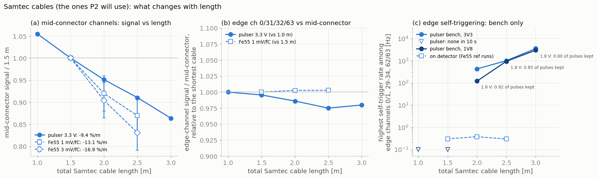
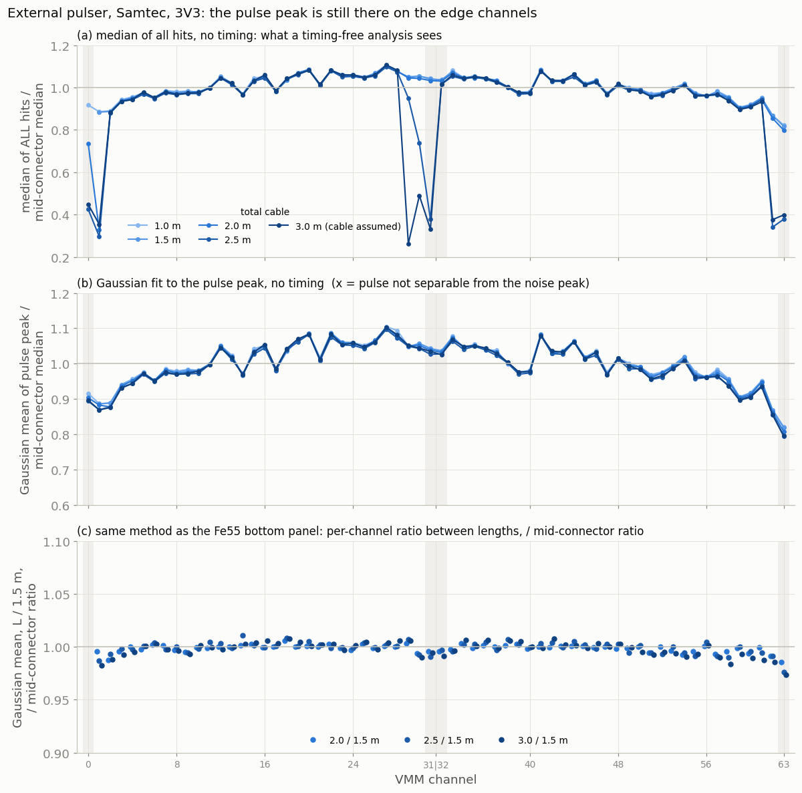
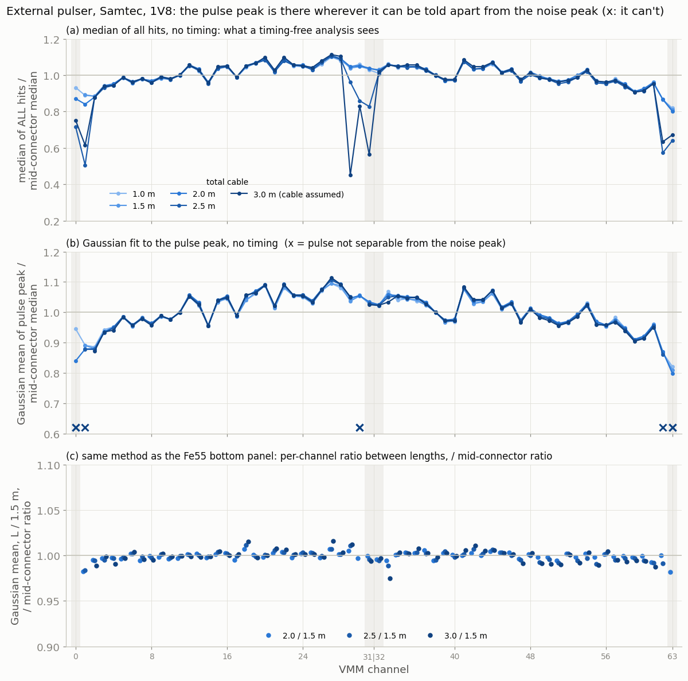
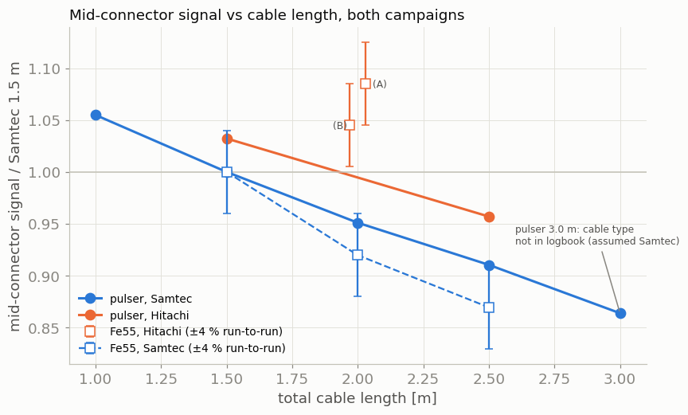
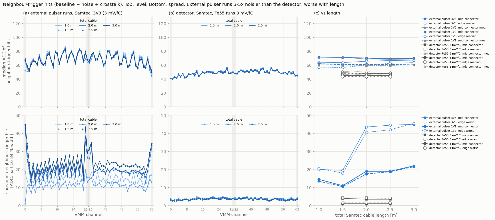
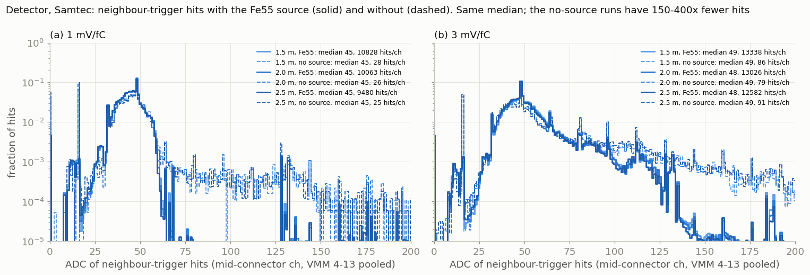

Cable length and edge channels: external pulser vs Fe55
The pulser edge-channel 'breakdown' on long off-detector cables is self-triggering noise, not signal loss; no edge effect with Fe55 on the P2 detector
Hitachi cables will not be available; P2 has to use Samtec. The conclusions below are therefore drawn from the Samtec data at different lengths. Hitachi results are kept further down for reference only.
Bottom line (Samtec). In the external-pulser runs, the VMM channels at the connector borders (0/1, 29–31, 62/63) appear to "break down" with long cables. They barely lose signal: the real pulse amplitude on those channels loses at most ~2.5 % more than the mid-connector channels, even at 3 m. What changes is that they start self-triggering: none up to 1.5 m, 0.1–0.4 kHz at 2.0 m, ~1 kHz at 2.5 m and ~3 kHz at 3.0 m (total length). Those noise hits (ADC ≈ 120–180) drag any mean or median of the ADC spectrum down. With Fe55 on the P2 detector (Samtec 1.5 / 2.0 / 2.5 m), the edge channels behave exactly like the mid-connector channels (3–27, 36–60), both in photopeak (within 0.6 %) and in noise (~0.3 Hz). Why only with the external pulser: the neighbour-trigger hits show the external-pulser setup is 3–5× noisier than the detector at the same gain, and its edge channels get ~2× noisier again from 2 m on. There the noise reaches the threshold; on the detector it stays far below it (section 6). A typical channel loses about 9 %/m of signal with the external pulser and 13–17 %/m with Fe55, but both numbers have a confound (see the caveats in the Samtec section).
Samtec: what changes with cable length

| Total Samtec length | 1.0 m | 1.5 m | 2.0 m | 2.5 m | 3.0 m* |
|---|---|---|---|---|---|
| Pulser, mid-connector signal (3.3 V, /1.5 m) | 1.055 | 1 | 0.951 | 0.910 | 0.864 |
| Fe55, mid-connector signal (1 mV/fC, /1.5 m, ±4 %) | – | 1 | 0.920 | 0.869 | – |
| Fe55, mid-connector signal (3 mV/fC, /1.5 m, ±4 %) | – | 1 | 0.904 | 0.831 | – |
| Pulser, edge vs mid-connector (3.3 V, /1.0 m) | 1 | 0.995 | 0.986 | 0.975 | 0.980 |
| Fe55, edge vs mid-connector (1 mV/fC, /1.5 m) | – | 1 | 1.003 | 1.003 | – |
| Pulser, worst edge self-trigger rate (3.3 V) | none | none | 0.4 kHz | 1.0 kHz | 3.6 kHz |
| Pulser, real pulses kept on worst edge ch. (1.8 V) | 1.00 | 1.00 | 0.92 | 0.85 | 0.80 |
| Detector, worst edge noise rate (no source) | – | 0.3 Hz | 0.4 Hz | 0.3 Hz | – |
| External pulser noise spread, mid-connector / worst edge (3 mV/fC) [ADC] | 14.5 / 20 | 11 / 20 | 19 / 44 | 19 / 44 | 22 / 45 |
| Detector noise spread, mid-connector / worst edge (3 mV/fC) [ADC] | – | 4.0 / 4.2 | 3.5 / 4.2 | 3.5 / 4.0 | – |
| External pulser neighbour-hit level, median / mean, mid-connector (1.8 V) [ADC] | 62 / 60 | 60 / 60 | 61 / 59 | 60 / 59 | 62 / 60 |
| External pulser neighbour-hit level, median, mid-connector / edge (1.8 V) [ADC] | 62 / 57 | 60 / 56 | 61 / 60 | 60 / 62 | 62 / 64 |
| Detector neighbour-hit level, median / mean, mid-connector (3 mV/fC) [ADC] | – | 49 / 51 | 48 / 50 | 48 / 50 | – |
| Detector neighbour-hit level, median, mid-connector / edge (3 mV/fC) [ADC] | – | 49 / 48 | 48 / 48 | 48 / 48 | – |
* The cable type of the 3.0 m pulser runs (50 cm + 2.5 m) is not in the logbook; they belong to the Samtec series and are assumed Samtec. Fit slopes: pulser −8.8 / −9.2 / −9.4 %/m at 1.8 / 2.5 / 3.3 V; Fe55 −13.1 %/m at 1 mV/fC and −16.9 %/m at 3 mV/fC (three points each, ±4 % per point). The 3 mV/fC runs also have 3–5 % saturated hits, which can bias the peak.
Two confounds behind the length dependence.
- External pulser: length vs day. The 1.0 and 1.5 m runs were taken on 5 June, the 2.0, 2.5 and 3.0 m runs on 8 June. The step in noise and the onset of self-triggering both fall between 1.5 and 2.0 m, so part of it may be a different setup on the second day. Within 8 June, the self-triggering still grows with length (Samtec 0.4 → 1.0 → 3.6 kHz).
- Fe55: length vs time. The Samtec runs were taken in order of increasing length through the afternoon, and the gas gain was not stable between runs (the same Hitachi cable lost 3.6 % in one hour). A downward gain drift would add to the apparent cable loss, which may be why Fe55 (13–17 %/m) comes out steeper than the pulser (9 %/m).
What this means for P2 with Samtec:
- Up to 1.5 m nothing happens at the edges on either setup.
- From 2 m the external-pulser runs show edge self-triggering that grows quickly with length. The detector, measured up to 2.5 m, does not. Whether the detector stays quiet with longer cables, or in its final grounding, is not measured.
- Signal: each extra metre of Samtec costs roughly 9 % (pulser) to 13–17 % (Fe55, possibly inflated by gain drift) of the signal on every channel. The edges are not significantly worse.
Data
| External pulser (June 2026) | Fe55 on detector (Oct 2026) | |
|---|---|---|
| Signal | Zedboard pulser, 1 kHz, 120 ns, into every third channel at once (groups 3k / 3k+1 / 3k+2), pulser 1.8 / 2.5 / 3.3 V | Fe55 X-rays on the P2 pads, 1–3 pads per event; m410 / d750 |
| Cable | 50 cm injection + transmission (Samtec 50 cm–2.5 m, Hitachi 1 m and 2 m); lengths below are the total | single cable: Hitachi 2.0 m (two takes), Samtec 1.5 / 2.0 / 2.5 m |
| Electronics | hybrid 4118, VMM id 7, 3 mV/fC, 200 ns, SNG on | 5 hybrids, VMM 4–13, 1 and 3 mV/fC, SNG on |
| Input | converted hits trees (the June pcapng are owner-only) |
raw pcapng, decoded with vmm_decode |
Which data each result uses
The detector campaign has two kinds of run at every cable length and gain: a Fe55 run
(source on, 600 s, file names fe55_…) and a no-source reference run (300 s,
ref4_…), all taken on 7 Oct with SNG on. The external-pulser runs are one run per pulsed group
(3k, 3k+1, 3k+2) for each length and voltage, 10 000 pulses each (10–24 s).
| Result | Runs | Hits used | Statistics |
|---|---|---|---|
| Pulse amplitude, efficiency (sections 2, 5) | external pulser, the run in which the channel is pulsed | hits within ±500 ns of a pulse | ~10 000 pulses per channel |
| Self-trigger rate (section 3) | external pulser, the run in which the channel is pulsed | hits more than 500 ns from any pulse | 10–24 s per run |
| Neighbour-hit level and spread, external pulser (section 6) | external pulser, the two runs in which the channel is not pulsed | hits within ±500 ns of a pulse (all below threshold) | ~20 000 per channel (~13 000 on edges) |
| Photopeak ratios, edge/mid-connector, gain stability (sections 4, 5) | detector, Fe55 runs | over-threshold hits | 600 s per run |
| Noise rate without source (section 4) | detector, no-source runs (7 Oct and 29 Sep) | over-threshold hits | 300 s per run |
| Neighbour-hit level and spread, detector (section 6) | detector, Fe55 runs; cross-checked with the no-source runs | neighbour-trigger hits (not over threshold) | Fe55: ~10 000–13 000 per channel; no source: only 25–90 per channel |
Run list
External pulser (hybrid_performance/, VMM 7 of hybrid 4118), Samtec:
…2cables_50cm_{50cm,1meter,1meter5,2meter,2meter5}_channels_{3k,3k+1,3k+2}_vmm1_{1V8,2V5,3V3}_*
for 1.0 / 1.5 / 2.0 / 2.5 / 3.0 m total. Hitachi: …hitachi_50cm_{1meter,2meter}_….
Detector (source_tests/cable_length/, VMM 4–13), 7 Oct, Samtec:
| Total length | Gain | Fe55 run | No-source run |
|---|---|---|---|
| 1.5 m | 1 mV/fC | fe55_samtec_1.5m…_1mVfC_20261007-151716 | ref4_samtec_1.5m…_1mVfC_20261007-150833 |
| 2.0 m | 1 mV/fC | fe55_samtec_2.0m…_1mVfC_20261007-162811 | ref4_samtec_2.0m…_1mVfC_20261007-161257 |
| 2.5 m | 1 mV/fC | fe55_samtec_2.5m…_1mVfC_20261007-164656 | ref4_samtec_2.5m…_1mVfC_20261007-170053 |
| 1.5 m | 3 mV/fC | fe55_samtec_1.5m…_3mVfC_20261007-144517 | ref4_samtec_1.5m…_3mVfC_20261007-145714 |
| 2.0 m | 3 mV/fC | fe55_samtec_2.0m…_3mVfC_20261007-155347 | ref4_samtec_2.0m…_3mVfC_20261007-160431 |
| 2.5 m | 3 mV/fC | fe55_samtec_2.5m…_3mVfC_20261007-171625 | ref4_samtec_2.5m…_3mVfC_20261007-170954 |
Hitachi 2.0 m (reference only): Fe55 1 mV/fC 114534 and 125430, 3 mV/fC 135852; no source 113537, 134400 (1 mV/fC), 135238 (3 mV/fC).
29 Sep no-source runs: ref_{1.5,2.0,2.5}m_5hyb.
How to read the plots: "/ mid-connector" and "mid-connector ratio"
Each VMM's 64 channels leave the hybrid on two connector blocks, channels 0–31 and 32–63. The edge channels (grey bands in the plots) are the ones at the ends of a block: 0, 31, 32 and 63. The mid-connector channels are the reference: channels 3–27 and 36–60, i.e. at least three channels away from either end of a block. They never include 0–2, 28–35 or 61–63.
Pulser: amplitude / mid-connector
Within one run, for each channel:
- take the median ADC of its in-time hits (within ±500 ns of a pulse);
- divide by the median of the same quantity over the mid-connector channels of that run.
1.00 means "same as a typical channel in this run", 0.80 means "20 % smaller". Dividing by the mid-connector median removes the overall drop with length; what's left is the shape across the channels.
Fe55: mid-connector ratio and edge / mid-connector
- For every channel (each VMM 4–13, each channel 0–63), fit the Fe55 photopeak with cable A
and with cable B and take
r = peakA / peakB. It's the same pad on the same channel, so the pad's own gain cancels and only the cable effect remains. - The mid-connector ratio is the median of
rover all mid-connector channels of all VMMs. For Samtec 2.0 m / 1.5 m it is 0.920: a typical channel lost 8 % going from 1.5 to 2.0 m. This is the number in the legend. - For each channel number, take the median of
rover the VMMs and divide by the mid-connector ratio. That's what's plotted.
1.00 means the channel lost exactly as much as a typical channel. An edge channel that suffered more from the longer cable would sit below 1.
Why the Fe55 edge-ratio plot used to show no 10 % loss
Dividing by the mid-connector ratio removes the overall cable loss on purpose: the question that plot answers is "does any channel lose more than a typical channel?". The loss itself is in the mid-connector ratio. The figure in section 4 now shows both: the raw per-channel ratio on top, where the 8 % and 13 % losses are visible as the level of each set of points, and the normalised ratio below.
Mid-connector channels or all channels? The reference excludes the channels under test, so that an edge effect can't hide inside its own reference. In practice it makes no difference here: the edge channels are 4 out of 64, and the median over all channels equals the mid-connector median to 0.001 (Samtec 2.0/1.5 m: 0.920 vs 0.920; 2.5/1.5 m: 0.869 vs 0.870 at 1 mV/fC).
1. Which channels are actually pulsed
In most June runs the labels 3k+1 and 3k+2 are swapped: config "3k+1" pulses VMM channels 2, 5, …, 62, and "3k+2" pulses 1, 4, …, 61. This is the "mismatch" noted in the logbook. The Hitachi 50 cm + 2 m runs (8 June, from 16:53) are not swapped. The analysis therefore detects the pulsed group from the data in every run. One run had no pulses at all and was dropped (Hitachi 50 cm + 2 m, 1.8 V, "3k+2", 17:05).
2. Pulser: edge amplitude barely depends on length
The pulse clock comes from clean mid-connector channels of the same run. Only hits within ±500 ns of a pulse count as signal; everything else counts as noise.

2b. Timing-free check: Gaussian fit to the pulse peak
Section 2 selects hits by time, using a pulse clock. To check that the result doesn't depend on that, and to compare with what a timing-free analysis (mean or median of all hits) sees, each pulsed channel's full ADC spectrum, all hits with no time selection, is fitted with a Gaussian on the pulse peak:
- Histogram all hits of the channel in the run where it is pulsed.
- Find the peaks of the (9-bin smoothed) spectrum. The pulse peak is the highest-ADC peak that holds at least 30 % of the number of pulses. The number of pulses is the hit count of the run's pulsed mid-connector channels (~10 000). This is not simply "the tallest peak": on a self-triggering edge channel the noise peak at ~120–180 ADC is the tallest one, up to 30 times taller than the pulse peak.
- Fit a Gaussian in ±1.5σ around it, four iterations. Its mean is the pulse amplitude.
- Reject the fit when the pulse can't be told apart from the noise. A channel with no excess hits (at most 1.2 hits per pulse) contains only pulses and is always kept. On a channel with noise hits, the noise peak is 2–7 ADC wide while the pulse peaks there are 30–60 ADC wide, so a fit narrower than 8 or wider than 80 ADC is rejected.
Cross-check: on the mid-connector channels, the Gaussian mean agrees with the in-time median of section 2 within 0.5–1.7 ADC (median difference) at every length and voltage.

| 3.3 V, edge channel / mid-connector | 1.0 m | 2.0 m | 2.5 m | 3.0 m |
|---|---|---|---|---|
| ch 1: median of all hits / Gaussian mean | 0.89 / 0.89 | 0.33 / 0.88 | 0.30 / 0.87 | 0.35 / 0.87 |
| ch 31: median of all hits / Gaussian mean | 1.04 / 1.04 | 1.03 / 1.04 | 0.38 / 1.03 | 0.33 / 1.03 |
| ch 62: median of all hits / Gaussian mean | 0.87 / 0.87 | 0.85 / 0.86 | 0.34 / 0.86 | 0.38 / 0.85 |
| ch 63: median of all hits / Gaussian mean | 0.82 / 0.82 | 0.80 / 0.81 | 0.38 / 0.79 | 0.40 / 0.80 |
- The fit recovers the pulse on every edge channel at 3.3 V. The "breakdown" in (a) is the noise peak pulling the median down. The pulse peak itself sits where it sat with the shortest cable.
- In the Fe55-style ratio (c), the edge channels at 3.3 V are at 0.987–0.996 for 2.0 m, 0.976–0.992 for 2.5 m and 0.973–0.995 for 3.0 m. The mid-connector channels scatter by ±0.3–0.5 %. So the external pulser sees a small extra loss on some edge channels, largest on ch 63 (−2.4 % at 2.5 m, −2.7 % at 3.0 m). With Fe55, the edge channels at 2.0 and 2.5 m are within 0.7 % (section 4).
- Part of that small extra loss is the day change. The 1.5 m reference was taken on 5 June and the longer cables on 8 June. Comparing only 8 June runs, ch 63 loses 1.0 % from 2.0 to 2.5 m and 1.3 % from 2.0 to 3.0 m.
- At 1.8 V the method reaches its limit. The pulse (~200–250 ADC) is then not far above the noise peak (~130–180). At 2.5 and 3.0 m the two merge on the self-triggering edge channels (0, 1, 30, 62, 63), and those fits are rejected (crosses in the figure below). Where the fit is accepted, it gives the same values as at 3.3 V. The 2.5 V runs only lose ch 0 and 30 at 3.0 m.
- The pulse peak gets wider with longer cables: σ ≈ 12 ADC at 1.5 m and 22–27 ADC from 2 m on the mid-connector channels, and 30–60 ADC on the edge channels. That is the same extra noise that the neighbour-trigger hits show (section 6), now riding on the pulse.

3. Pulser: what grows with length is self-triggering


4. Fe55 on the detector: no edge effect

Why the bottom panel sits at 1
A longer cable attenuates every channel by about the same fraction. With 2.0 m instead of 1.5 m (1 mV/fC), a mid-connector channel keeps 92.0 % of its photopeak. If an edge channel is attenuated by the same fraction, its own ratio is also ~0.920, and dividing by 0.920 gives 1. The bottom panel therefore asks one question: does this channel lose more (below 1) or less (above 1) than the mid-connector channels? The size of the loss itself is in the top panel.
Worked example, channel 0, Samtec 2.0 m vs 1.5 m, 1 mV/fC:
- On each of the 10 VMMs, take the channel-0 photopeak with 1.5 m and with 2.0 m (typical values 209 and 193 ADC)
and the ratio
r. Same pad, same VMM channel, so the pad's gain cancels. - The median of
rover the 10 VMMs is 0.923: channel 0 kept 92.3 %. - The mid-connector ratio for this pair is 0.920.
- 0.923 / 0.920 = 1.004, the point plotted at channel 0. The error bar is the spread of
rover the 10 VMMs divided by √10: ±0.005.
| Samtec pair | Mid-connector ratio | ch 0 | ch 31 | ch 32 | ch 63 | Mid-connector channels, scatter |
|---|---|---|---|---|---|---|
| 2.0 / 1.5 m, 1 mV/fC | 0.920 | 1.004 ± 0.005 | 1.003 ± 0.003 | 0.996 ± 0.004 | 1.002 ± 0.003 | ±0.4 % (0.988–1.008) |
| 2.5 / 1.5 m, 1 mV/fC | 0.869 | 1.006 ± 0.003 | 0.999 ± 0.006 | 1.005 ± 0.002 | 1.000 ± 0.004 | ±0.5 % (0.987–1.012) |
| 2.0 / 1.5 m, 3 mV/fC | 0.904 | 1.000 ± 0.002 | 1.007 ± 0.001 | 1.001 ± 0.003 | 0.999 ± 0.004 | ±0.3 % (0.993–1.010) |
| 2.5 / 1.5 m, 3 mV/fC | 0.831 | 0.998 ± 0.004 | 1.006 ± 0.005 | 1.001 ± 0.003 | 1.002 ± 0.005 | ±0.4 % (0.990–1.011) |
Points to keep apart:
- For the mid-connector channels, "around 1" is partly by construction: they define the reference, so their median is exactly 1. What is measured is their scatter, ±0.3–0.5 %, i.e. how precisely a single channel's ratio is known.
- For the edge channels it is a result, not a construction: channels 0, 31, 32 and 63 (and 28–35, 0–2, 61–63) are left out of the reference. They could have landed anywhere. They land within 0.7 % of 1, inside the scatter of ordinary channels.
- Sensitivity: an edge channel losing 5 % more than the others would sit at 0.95, about 10–20 error bars below 1, and would be obvious. The excess loss on edge channels is below ~1 % up to 2.5 m.
- Why normalise at all: anything that scales all channels together cancels in the bottom panel, including the gas-gain drift between runs. The grey Hitachi points show it: the same cable measured twice, one hour apart, has a raw ratio of 0.964 (the gain dropped 3.6 %), yet sits at 1 below. So the edge result is not affected by the drift that confounds the loss per metre (section 5).
- What it can't see: a difference that is the same with both cables (an edge channel always 10 %
lower) cancels in
r. See the caveat further down.

5. Mid-connector signal vs length


Why some points are above 1
The y-axis is each measurement's mid-connector signal divided by the same quantity with Samtec at 1.5 m total, in the same campaign. Samtec 1.5 m is 1 by definition; a point above 1 just means more signal than Samtec 1.5 m. There are two kinds:
| Point | Value | Taken | Why above 1 |
|---|---|---|---|
| External pulser, Samtec 1.0 m (3.3 V) | 1.055 (441.5 vs 418.5 ADC) | 5 June, same morning as 1.5 m | Shorter cable, less attenuation: expected. It's on the same line as the longer Samtec cables. |
| External pulser, Hitachi 1.5 m | 1.032 | 8 June 16:47 | Hitachi attenuates less than Samtec at the same length. Its 2.5 m point (0.957) is also above Samtec 2.5 m (0.910). But the Hitachi runs were on 8 June and the Samtec 1.5 m reference on 5 June, so day-to-day changes are mixed in. |
| Fe55, Hitachi 2.0 m (A), 1 mV/fC | 1.085 | 7 Oct 11:45 | Hitachi attenuates less, and these runs were taken before the Samtec 1.5 m reference (15:17 at 1 mV/fC, 14:45 at 3 mV/fC) while the gain was falling. |
| Fe55, Hitachi 2.0 m (B), 1 mV/fC | 1.045 | 7 Oct 12:54 | |
| Fe55, Hitachi 2.0 m, 3 mV/fC | 1.027 | 7 Oct 13:58 |
The Fe55 Hitachi points need care. The same Hitachi cable gave 1.085, then 1.045 an hour later: the gain fell by 3.6 % in between, with nothing changed. The three Hitachi values also drop in the order they were taken, as they get closer in time to the Samtec reference (3.5 h, 2.4 h, 0.8 h before it). If the gain kept falling through the afternoon, part of Hitachi's advantage with Fe55 is gas-gain drift, not the cable. How much can't be said from these runs. The external-pulser Hitachi points don't depend on gas gain, and still show Hitachi ahead by 5–7 %. This is for reference only, since P2 will use Samtec.
The same drift works the other way on the Samtec Fe55 points: they were taken in order 1.5 → 2.0 → 2.5 m, so a falling gain would make the longer cables look worse. That's the confound already flagged in the Samtec section.
6. Noise: neighbour-trigger hits, external pulser vs detector
Both campaigns ran with the neighbour trigger (SNG) on. When a channel fires, its neighbours are read out too, below threshold. Those neighbour hits sample the baseline of a channel at a random moment, plus noise, plus any crosstalk from the channel that fired. Their spread (half the 16–84 % width of the ADC distribution) is therefore a noise measure available in both setups. With the external pulser I use the channels that are not pulsed in that run, read out within ±500 ns of a pulse (none of these hits is over threshold). On the detector I use the neighbour-trigger hits (not over threshold) of the Fe55 runs; the no-source runs have far too few of them (see 6b below).

- The external-pulser setup is 3–5× noisier at the same gain: mid-connector spread 11–22 ADC against ~4 ADC on the detector.
- With the external pulser the edge channels are the noisiest, and from 2 m they jump from ~20 to ~45 ADC. On the detector the edges are like the mid-connector channels (≤ 4.2 ADC) and nothing changes from 1.5 to 2.5 m.
- It is noise, not crosstalk from the pulses. The level of the neighbour hits rises with the pulser voltage (62 → 72 ADC from 1.8 to 3.3 V: that part is crosstalk). The spread does not change with the voltage (e.g. 2.0 m: 17.5 / 17.5 / 19.0 ADC at 1.8 / 2.5 / 3.3 V).
- The level (median or mean ADC) does not change with cable length in either setup: external pulser 60–62 ADC at 1.8 V (69–72 at 3.3 V), detector 48–49 ADC at 3 mV/fC and 45 at 1 mV/fC, from the shortest to the longest cable. Mean and median agree within 2 ADC, so the distributions have no big tail. So a longer cable does not shift the baseline; it only widens it in the external-pulser runs.
- The level differs between the setups by ~12 ADC (60 vs 48 at 3 mV/fC). That's not a noise difference: the two use different hybrids with their own pedestals, and the external-pulser level includes crosstalk from the pulsed neighbours. Its per-channel zigzag in (a) follows the 3-channel pulse pattern.
- Edge channels: on the detector their level is the same as the mid-connector channels (48 vs 48). In the external-pulser runs it is 4–5 ADC lower with short cables (56–57 vs 60–62 at 1.8 V) and reaches the mid-connector level from 2 m. The external-pulser edges are different from the mid-connector channels, the detector edges are not.
6b. Detector: with and without the Fe55 source
On the detector, neighbour hits only appear when a channel next to them fires. With the source on, that happens at every photon; without it, only on rare noise or cosmic hits. To check that the source doesn't bias the baseline, the hits of all mid-connector channels of VMM 4–13 are pooled into one ADC histogram per run, with and without the source.

| Samtec, total length | 1.5 m | 2.0 m | 2.5 m |
|---|---|---|---|
| Median ADC, 1 mV/fC: Fe55 / no source | 45 / 45 | 45 / 45 | 45 / 45 |
| Median ADC, 3 mV/fC: Fe55 / no source | 49 / 49 | 48 / 49 | 48 / 49 |
| Hits per channel, 1 mV/fC: Fe55 (600 s) / no source (300 s) | 10 828 / 28 | 10 063 / 26 | 9 480 / 25 |
| Hits per channel, 3 mV/fC: Fe55 (600 s) / no source (300 s) | 13 338 / 86 | 13 026 / 79 | 12 582 / 91 |
| Mean ADC, 3 mV/fC: Fe55 / no source | 56.7 / 71.9 | 56.0 / 72.8 | 55.3 / 75.6 |
- The median is the same with and without the source, within 1 ADC at every length and both gains. The source does not shift the baseline that the neighbour hits measure.
- Without the source there are very few hits: 25–90 per channel in 300 s, against ~10 000–13 000 per channel in the Fe55 runs. That is 150–400 times fewer hits per run, or 80–200 times fewer per second. A per-channel spread from 25 hits is not meaningful, which is why section 6 uses the Fe55 runs.
- The no-source distributions have a longer high-ADC tail (mean 72–76 against 55–57 ADC at 3 mV/fC). Those few hits sit next to the rare hits that triggered them, which are probably larger on average than an Fe55 photon (cosmics, noise), so they pick up more charge sharing or crosstalk. That tail is also what makes the no-source per-channel spreads larger (3–7 ADC at 1 mV/fC, up to 15–25 on single edge channels) when computed from so few hits.
- The pooled histograms mix all channels, so their width (6 ADC at 1 mV/fC, 12 at 3 mV/fC) includes the channel-to-channel pedestal differences. They're only used to compare the medians, not as a noise number.
This explains the self-triggering in numbers. The threshold sits at ~150 ADC in the external-pulser runs and ~140 ADC on the detector, with the baseline at ~65 and ~48 ADC, so the margin is ~85–90 ADC in both. On the detector that is more than 20 times the noise spread: the noise never reaches threshold. In the external-pulser runs it is ~4–8 times the mid-connector spread, ~4.5 times on the edge channels up to 1.5 m (a few tens of Hz were seen on Hitachi 1.5 m) and only ~2 times on the edge channels from 2 m: those channels fire on noise at the kHz level.
What the two measurements agree and disagree on
| Pulser | Fe55 | |
|---|---|---|
| Typical-channel loss per metre (Samtec) | ~9 %/m (length and day confounded) | 13–17 %/m (length and gain drift confounded) |
| Noise spread at 3 mV/fC, mid-connector / edge | 11–22 / up to 45 ADC, grows with length | ~4 / ~4 ADC, flat |
| Hitachi vs Samtec (reference only) | Hitachi better | Hitachi better |
| Edge channels lose more signal with length (Samtec) | ≤ 2.5 % at 3 m (section 2) | No, < 0.6 % at 2.5 m (section 4) |
| Edge channels self-trigger on long cables | Yes (section 3) | No (section 4) |
So both campaigns see a signal loss with length on every channel. The Fe55 loss comes out steeper, possibly because of gas-gain drift. Neither sees a significant extra loss at the edges. The real difference is the noise.
Why the edge channels look "lost" in the pulser data
The real pulse is still there on those channels, within ~2.5 % of the usual amplitude. But they also produce many extra noise hits with small ADC (~120–180). With 2.5–3 m of cable a channel can have 1–3 noise hits for every real pulse. If you average all the hits of the channel, or take the median, the result is dragged towards ~150 and the channel looks like it collapsed. Only at the lowest pulser voltage (1.8 V) do real pulses actually get lost: 15–20 % of them, because the channel is busy with a noise hit when the pulse arrives.
Other things to keep in mind when comparing with earlier analyses:
- The 29 Sep Fe55 runs peak at ~860 ADC with 14 % of hits saturated. A truncated mean (300 < ADC < 1022) is biased there. Use the 7 Oct 1 mV/fC runs.
- In
alarrache.C, the ratio histogram has 60 bins over 0–64 but is filled for 64 channels, so the channel labels ofloss.pngare shifted.
Why it happens with the external pulser and not on the detector
What the data show:
- The external-pulser setup is noisier everywhere, by 3–5× at the same gain, and the noise grows with cable length, most on the edge channels (section 6). On the detector the same kind of cable adds no noise up to 2.5 m.
- The self-triggering is just that noise crossing the threshold. On the external-pulser edge channels from 2 m the margin is only ~2× the noise spread; on the detector it is >20×.
- It doesn't need the pulses. One external-pulser run recorded no pulses at all (Hitachi 50 cm + 2 m, 1.8 V, 8 June 17:05), and channels 0–2 still fired at ~30 kHz.
So the external-pulser chain picks up much more noise than the detector, and the long cable makes it worse. What the data don't show is where that noise comes from. Candidate explanations:
- What sits at the far end of the cable. On the detector the VMM input sees a pad: a capacitance to the mesh, tied to the detector ground. With the external pulser it sees the pulser injection network through an extra 50 cm cable and a cable-to-cable joint. A long line ending in a different impedance can make the preamplifier input unstable.
- Why the edge pins. The outermost pins of a connector usually have the fewest ground pins next to them, so their return path is the longest and the least shielded. They're the first to go unstable.
- Grounding. With the external pulser, the pulser board and the hybrid may be connected to ground mainly through the signal cable itself. On the detector there's a common ground.
- The neighbour trigger (SNG) probably spreads one oscillating channel to its neighbours. That's why the rates come in equal pairs or triples (0/1, 30/31, 62/63).
Caveat on the Fe55 result. The Fe55 ratio method cancels any fixed difference
between channels, by design. So it confirms that the edge channels don't lose more signal as the cable
gets longer. It can't tell whether the edge channels are always ~10–20 % lower, which is the dome seen
in section 2. Whether that dome comes from the pulser board or from the VMM itself needs the VMM internal
test pulse, or the ACDC_Near_Pulser run of 9 July.
Tests that would separate the explanations
- Repeat one long-cable pulser run with SNG off, to see which single channel actually oscillates.
- Disconnect the pulser but leave the cables plugged in, open at the far end, and check whether the edge channels still oscillate.
- Add a ground strap between the pulser board and the hybrid.
- Use one long transmission cable without the 50 cm injection cable and the joint.
- Retake the short-cable (1.0 and 1.5 m) external-pulser runs on the same day and setup as the long ones, to separate length from day.
- For Fe55, interleave the lengths (e.g. 1.5 → 2.5 → 2.0 → 1.5 m), so a gain drift can be measured and removed.
Open points
- The cable type of the 50 cm + 2.5 m pulser runs is not in the logbook (assumed Samtec).
- Channel 0 is missing in the Samtec 50 cm + 1 m runs (cabling or a dead channel at the time).
Numbers (summary.txt) and how to reproduce
All numbers: summary.txt.
Code: P2_basket_analysis/cable_length/cable_length_study.py (commit 722b9aa). Data copied from
vmm_daplxa:/local/p2/p2data/{hybrid_performance,source_tests}.
python3 cable_length/cable_length_study.py [--refresh]